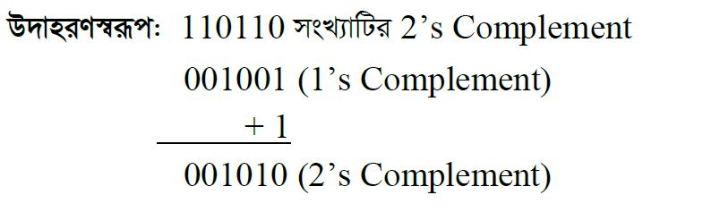
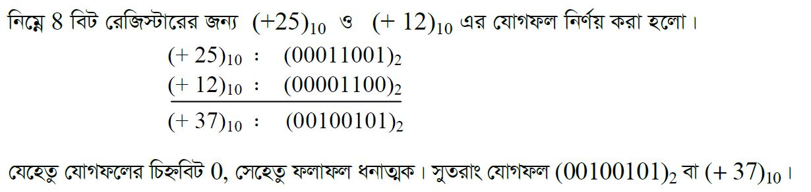
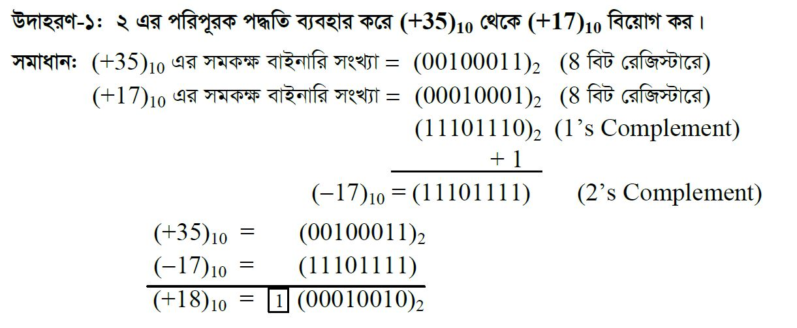

২ এর পরিপূরক গঠন প্রক্রিয়ায় +5 এবং -5 কে ৮-বিট রেজিস্টারে উপস্থাপন। ধনাত্মক চিহ্নযুক্ত সংখ্যার ক্ষেত্রে ধনাত্মক চিহ্নের জন্য চিহ্ন বিট 0 এবং বাকি ৭-বিট ব্যবহৃত হয় সংখ্যার প্রকৃত মানের জন্য। ঋণাত্মক চিহ্নযুক্ত সংখ্যার মান নির্ণয়ের জন্য প্রথমে সংখ্যাটির ধনাত্মক সংখ্যার মান নির্ণয় করতে হয়। তারপর ধনাত্মক সংখ্যার মানের ১ এর পরিপূরক করতে হয়। শেষে ১ এর পরিপূরকে প্রাপ্ত মানের সাথে বাইনারি ১ যোগ করতে হয়।

২ এর পরিপূরক গঠনের গুরুত্বঃ
১। প্রকৃত মান গঠন ও ১ এর পরিপূরক গঠনে +০ এবং -০ এর ভিন্ন ভিন্ন মান পাওয়া যায় যা বাস্তবের সাথে অসামঞ্জস্যপূর্ণ। কিন্তু ২ এর পরিপূরক গঠনে +০ এবং -০ এর মান একই যা বাস্তবের সাথে সামঞ্জস্যপূর্ণ।
২। ২ এর পরিপূরক গঠনে সরল বর্তনী প্রয়োজন যা দামে সস্তা এবং দ্রুত গতিতে কাজ করে।
৩। ২ এর পরিপূরক গঠনে চিহ্ন যুক্ত সংখ্যা এবং চিহ্নবিহীন সংখ্যা যোগ করার জন্য একই বর্তনী ব্যবহার করা যায়।
৪। ২ এর পরিপূরক গঠনে যোগ ও বিয়োগের জন্য একই বর্তনী ব্যবহার করা যায়। তাই আধুনিক কম্পিউটারে ২ এর পরিপূরক গঠন ব্যবহৃত হয়।
২ এর পরিপূরক পদ্ধতিতে যোগঃ
১। প্রদত্ত চিহ্নযুক্ত সংখ্যা দুটির ২ এর পরিপূরক পদ্ধতিতে মান নির্নয় করতে হবে।
২। অতঃপর প্রাপ্ত মানের বাইনারি যোগ করতে হবে।
৩। যোগফলে অতিরিক্ত ক্যারি বিট (অর্থাৎ ৮ বিট রেজিস্টারের ক্ষেত্রে যোগফল ৮ বিটের বেশি হলে সর্ব বামের বিটটিকে ক্যারি বিট বলা হয়) থাকলে তা বাদ দিতে হবে।
৪। এভাবে প্রাপ্ত সংখ্যাটিই হবে প্রদত্ত সংখ্যা দুটির যোগফল।

২ এর পরিপূরক পদ্ধতিতে বিয়োগঃ
১। প্রদত্ত চিহ্নযুক্ত সংখ্যা দুটির মধ্যে যে সংখ্যাটি বিয়োগ করতে হবে তার চিহ্ন পরিবর্তন করে তার ২ এর পরিপূরক পদ্ধতিতে মান নির্নয় করতে হবে(অর্থাৎ +৫ থাকলে -৫ এর মান অথবা -৫ থাকলে +৫ এর মান নির্নয় করতে হবে)।
২। অপর চিহ্নযুক্ত সংখ্যাটির ২ এর পরিপূরক পদ্ধতিতে মান নির্নয় করতে হবে।
৩। অতঃপর প্রাপ্ত মানের বাইনারি যোগ করতে হবে (বিয়োগের ক্ষেত্রেও যোগ করতে হয়)।
৪। যোগফলে অতিরিক্ত ক্যারি বিট (অর্থাৎ ৮ বিট রেজিস্টারের ক্ষেত্রে যোগফল ৮ বিটের বেশি হলে সর্ব বামের বিটটিকে ক্যারি বিট বলা হয়) থাকলে তা বাদ দিতে হবে।
৫। এভাবে প্রাপ্ত সংখ্যাটিই হবে প্রদত্ত সংখ্যা দুটির যোগফল।
